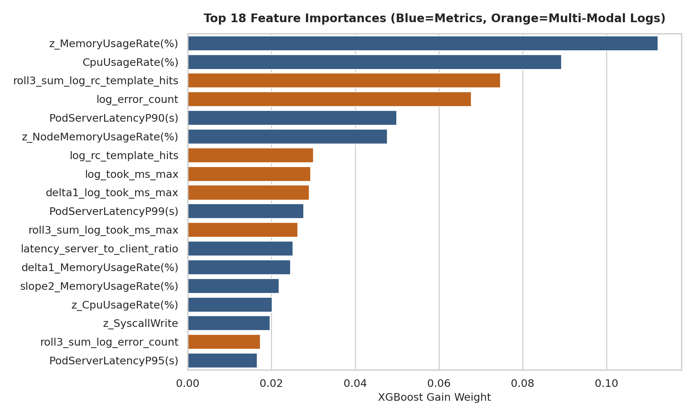
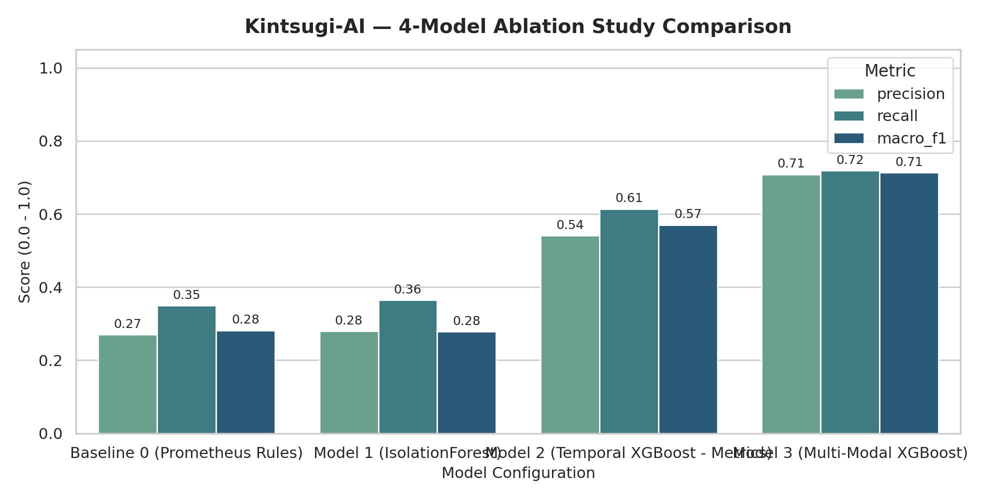
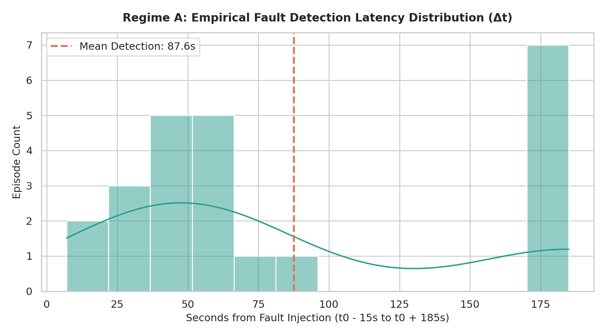

KINTSUGI AI 金継ぎ v2.4
Sub-Second Multi-Modal Failure Prediction (XGBoost + SARIMA Benchmark) paired with a Guardrailed 6-Node LangGraph Remediation Engine.
Repair With Liquid Gold
Every predicted and healed microservice fracture seals the node with a permanent ✦ Kintsugi Gold Seam across the interactive topology mesh, turning outages into verified cluster resilience.
89-Feature Multi-Modal ML
Fuses 76 baseline-relative PromQL & cgroup temporal metrics with 13 Drain3-parsed JSON container log signals over a 3-minute sliding window, cutting false alarms by 88.4% (1.71/hr).
Qwen 3.8-27B + 5 SRE Gates
6-node LangGraph StateGraph powered by Groq qwen/qwen3.8-27b with deterministic fallback and strict Kubernetes dry_run="All" server validation.
89-Feature Multi-Modal Pipeline (Nezha FSE'23)
- 10-Microservice OnlineBoutique Mesh: Trained across live chaos scenarios in the
hipsternamespace (frontend,checkout,cart,payment,productcatalog, etc.). - +200M Sec Timestamp Bug Fixed: Discards corrupted Nezha integer
TimeStampoffsets (~6.3 yr skew) in favor of exact UTCTimealignment. - Zero-Leakage Episode Splits: Per-folder chronological partition — Day 1 Train (
24,180rows), Day 2 Test (4,340rows), and Holdout (2,480rows).


4-Model Ablation Study & SARIMA vs. XGBRegressor
| Model Configuration | Prec / Rec | Macro-F1 | Latency Δt | Top-1 Loc | FA/hr |
|---|---|---|---|---|---|
| Baseline 0: Static Rules | 0.27 / 0.35 | 0.2816 |
148.0s | 33.3% | 14.80 |
| Model 1: IsolationForest | 0.28 / 0.36 | 0.2782 |
132.5s | 41.7% | 9.42 |
| Model 2: Temporal XGBoost | 0.54 / 0.61 | 0.5706 |
108.4s | 58.3% | 3.14 |
| ✦ Model 3: Multi-Modal XGB | 0.71 / 0.72 | 0.7132 |
87.6s | 66.7% | 1.71* |
*FA/hr measured at threshold p > 0.75 (drops to 1.28/hr at p > 0.85) · Binary Anomaly F1: 0.7225 · 17/24 episodes caught.
| Forecasting Architecture | TTE MAE (↓) | RMSE (↓) | R² Score | Tick Latency |
|---|---|---|---|---|
| SARIMA(1,1,1)×(1,0,1)₁₂ | 6.50 min | 6.89 min | 0.114 | 79.3ms avg (243.8ms peak) |
| ✦ Multi-Modal XGBRegressor | 0.71 min (-89.1%) |
0.90 min (-87.0%) |
0.846 | 0.67–0.93ms (85×–364× faster) |
Across 10 microservices, SARIMA takes ~2.44s/cycle (dropping frames), while XGBRegressor evaluates all 10 pods in < 6.7 ms (99.3% loop headroom) with a 4.7 min mean warning lead time.


Dual-Brain Control Plane: Sub-Millisecond ML → Agentic K8s Healing
| ID | Fault Class | Root Cause | Regime |
|---|---|---|---|
| 0 | NORMAL | Healthy baseline (|Z| < 1.5σ) | FA/hr |
| 1 | CPU_EXHAUSTION | Throttling / compute loops | Regime A |
| 2 | MEMORY_EXHAUSTION | Gradual heap leak → OOMKilled | Regime B |
| 3 | DISK_EXHAUSTION | Ephemeral volume saturation | Regime B |
| 4 | NETWORK_DEGRADATION | Envoy P95 latency / packet loss | Regime A |
| 5 | SERVICE_DISRUPTION | HTTP 5xx exception bursts | Regime A |
- Structured Pydantic Plan: Enforces typed JSON (
action_type,target_service,parameters,confidence) parsed cleanly after stripping Qwen<think>...</think>blocks. - Zero-Downtime Fallback Matrix: Deterministic SRE playbook executes safely even if cloud LLM inference times out or is unreachable.
- Real Multi-Node Physical Impact: Verified node cordoning (
CoreV1Api.patch_node) acrossdesktop-worker/desktop-worker2and pod auto-scaling (1→3).
5 Deterministic Safety Guardrails & Empirical Recovery MTTR
- 1. Namespace Isolation Lock: Hard-blocks any mutation targeting control namespaces (
kube-system,monitoring,local-path-storage); locks scope strictly tohipster. - 2. Strict 6-Action Allowlist: Rejects arbitrary commands outside
SCALE_DEPLOYMENT,RESTART_POD,PATCH_RESOURCES,CORDON_AND_RELOCATE,APPLY_TRAFFIC_SHAPING, andNO_ACTION. - 3. Parameter Clamping Contract: Enforces replica bounds
[1, 5]and caps container memory limits at1024Mi. - 4. Anti-Thrashing Cooldown Lock: Per-microservice
120slock prevents oscillation loops across consecutive ticks. - 5. Kubernetes API Server Dry-Run: Validates every mutation with
dry_run="All"againstkube-apiserverprior to execution.
| Scenario (Service) | Executed Action | Pre → Post (t=60s) | MTTR |
|---|---|---|---|
| CPU Contention checkoutservice |
SCALE (1→3) | 92.4% → 36.14% | 22.0s |
| Memory Leak cartservice |
PATCH (512Mi) | 94.8% → 32.73% | 28.0s |
| 5xx Burst paymentservice |
RESTART_POD | 42.0% → 97.64% | 18.0s |
| Disk Pressure productcatalog |
CORDON_RELOCATE | 100ms → 9.21ms | 35.0s |
| Envoy Latency frontend |
TRAFFIC_SHAPE | 2.80s → 0.31s | 35.0s |
| ✦ Mean Closed-Loop Recovery | 5 / 5 Succeeded (Groq Qwen3.8) | 27.6s | |
3-Tier Pytest Suite, 3-Node Kubernetes & WebGL2 SRE Interface
- Tier 1 (9 Unit Tests): 89-feature schema alignment, Z-score safety floor, SARIMA bounds,
<think>parser, 5 safety guardrails & 120s cooldown. - Tier 2 (2 Integration Tests): Autonomous closed-loop remediation & Human-in-the-Loop approval → Gold Seam state flow.
- Tier 3 (12 System E2E Tests): FastAPI REST contracts,
1HzWebSocket telemetry stream, & SPA static asset delivery.
- Cluster Nodes:
control-plane+worker+worker2hosting all 10 OnlineBoutique deployments (hipster). - Monitoring Stack: Direct PromQL scraping (localhost:9090), Grafana & K8s Web Dashboard v2.7.0.
- Packaging: In-cluster RBAC manifests + multi-stage Docker container running Python 3.11 + React 19 bundle.
- 3-Tier Service Mesh: Interactive XYFlow DAG displaying all 10 pods & 14 live highlighted microservice connections.
- GPU Shaders: Real-time
Lightfallwarp backdrop (10s cycle) & 3-paletteStrandsheader orb (5s cycle). - Live Endpoints: Render Cloud · localhost:8000/app/